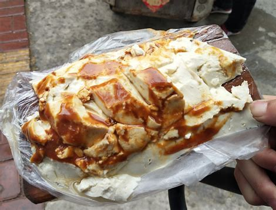

济宁特色小吃之济宁热豆腐
发布时间: 2022-04-07 4859 次浏览
-
济宁热豆腐亦称“托板热豆腐”或“托板豆腐”济宁人提到热豆腐，不是用动词“吃”而是用“喝”。热豆腐，无论寒暑一律必是热的，略烫人口舌的才好，有七滋八味。热豆腐做得细嫩，白生生、水汪汪，酷似块白玉，胜过脂膏。卖豆腐的师傅用铜制的豆腐刀子，将豆腐从大块上一片片地打到小木板上，再用刀划拉成麻将块大小的条块，再抿上特制的红红的辣椒酱，托板豆腐便做好了。这辣椒酱不算很辣，即使不吃辣椒的人也能耐受，所以才老少皆宜，人人爱吃。济宁热豆腐亦称“托板热豆腐”或“托板豆腐”，济宁人提到热豆腐，不是用动词“吃”，而是用“喝”。
 在很久以前，有一个江南人乘船到北京，行至济宁时突然生病滞留在运河边上的一个小店里，因病，几日茶饭不思，无精打采。一天早晨，伺候他的家人从外边带来一块热腾腾的豆腐，又细又软，他吃了几口，胃口大开，感到神清气爽，接着又买来两块一口气吞下去，三五天病就好了，接着赶往京城。
在很久以前，有一个江南人乘船到北京，行至济宁时突然生病滞留在运河边上的一个小店里，因病，几日茶饭不思，无精打采。一天早晨，伺候他的家人从外边带来一块热腾腾的豆腐，又细又软，他吃了几口，胃口大开，感到神清气爽，接着又买来两块一口气吞下去，三五天病就好了，接着赶往京城。
后来听说，此人在京城做了大官，虽然不乏山珍海味、美酒佳肴，仍不断思念在济宁吃的豆腐。几年后回乡省亲又来到这里，天色已晚驻进店里，第二天又派人到附近买豆腐吃。当时豆腐还没完全做好，来的人又催着要，卖豆腐的人将“不老不嫩”盛给他带去，谁知这次官人吃得更带劲，一连三天顿顿少不了豆腐。自此，热豆腐的名声—下传开了。
热豆腐，无论寒暑一律必是热的，略烫人口舌的才好，有七滋八味。热豆腐做得细嫩，白生生、水汪汪，酷似块白玉，胜过脂膏。卖豆腐的师傅用铜制的豆腐刀子，将豆腐从大块上一片片地打到小木板上，再用刀划拉成麻将块大小的条块，再抿上特制的红红的辣椒酱，托板豆腐便做好了。这辣椒酱不算很辣，即使不吃辣椒的人也能耐受，所以才老少皆宜，人人爱吃。人们不需要用碗筷或勺子，花一元钱，接过一托板豆腐，端至嘴边，此时要叉开腿，低头弯腰，轻轻地一吸，又热又嫩，洁白如玉的豆腐就会流入口中，地上还滴着水哩。
 现在济宁市场上虽然有不少的小吃、快餐，不少中老年人甚至上学的中小学生。早上不吃饭，专等那熟悉的热豆腐车子拿托盘豆腐作为早餐。运河水甘洌纯正，做的豆腐营养丰富，不含胆固醇，含有丰富的钙和微量元素，特别适合中老年人，尤其有“三高”或骨质疏松的人。吃托板豆腐讲究个趁热趁鲜，香气扑鼻，若打在碗盘中再吃，则食趣寡淡，索然无味了。笔者常吃一位老者做的热豆腐，在济宁相当有名，每天一到点，人们趋之若鹜。尤其是香椿头刚下来时，人们有香椿拌豆腐的吃法，风味独特，有人还捎到北京、上海。有时当天还抢不上。所以中国著名作词家乔羽老先生虽离家几十载，还念念不忘老家济宁的热豆腐。
现在济宁市场上虽然有不少的小吃、快餐，不少中老年人甚至上学的中小学生。早上不吃饭，专等那熟悉的热豆腐车子拿托盘豆腐作为早餐。运河水甘洌纯正，做的豆腐营养丰富，不含胆固醇，含有丰富的钙和微量元素，特别适合中老年人，尤其有“三高”或骨质疏松的人。吃托板豆腐讲究个趁热趁鲜，香气扑鼻，若打在碗盘中再吃，则食趣寡淡，索然无味了。笔者常吃一位老者做的热豆腐，在济宁相当有名，每天一到点，人们趋之若鹜。尤其是香椿头刚下来时，人们有香椿拌豆腐的吃法，风味独特，有人还捎到北京、上海。有时当天还抢不上。所以中国著名作词家乔羽老先生虽离家几十载，还念念不忘老家济宁的热豆腐。
喝托板热豆腐是有讲究的，那板子最好是用香椿木做的，大小厚薄相宜，有些老济宁人都有自备的托板，一是讲究纯正，二是讲究卫生，三是显摆身份。这豆腐更有讲究，必须用卤水点就，却须是新出锅的，热气腾腾，细腻白嫩。小贩用长长的豆腐刀将豆腐割成条状，一层层码在托板上，抹上一层辣椒酱，再用刀横斩几下，使豆腐呈不规则的块状，便于人们吸嘬。